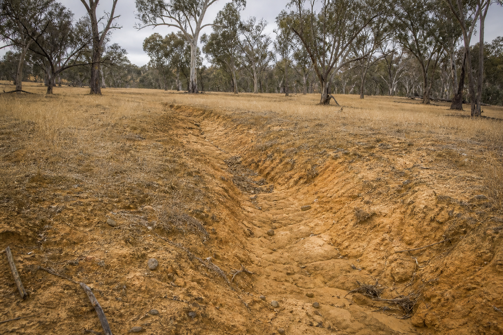
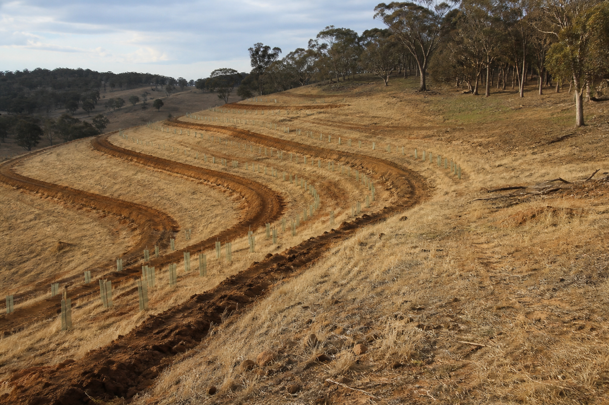
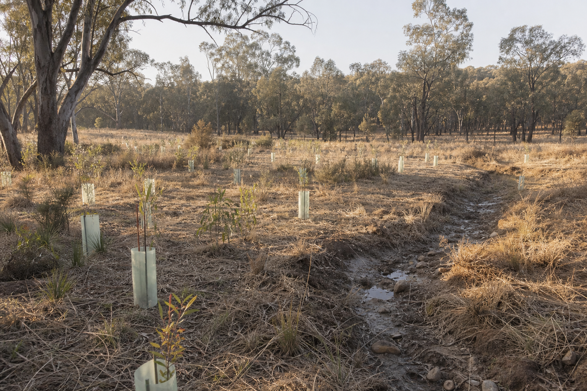

Landscape Regeneration Assessment
A paid planning service that identifies priority opportunities, staged recommendations, and the implementation work that should follow.
View Assessment Service
Muckleford and Central Victoria
Tree planting, contour ripping, revegetation, erosion repair, and practical property regeneration across Muckleford and surrounding Central Victoria.
Reading the land first
Before any works begin, the land is read as a whole system: slope, soil, water movement, compaction, existing vegetation, exposure, grazing pressure, and landholder goals.
The aim is to match the work to the place, so planting, ripping, drainage repair, and follow-up are grounded in what will actually establish in a dry Central Victorian landscape.
Landscape Regeneration Assessment
Most properties contain more opportunities than can realistically be addressed at once.
A Landscape Regeneration Assessment helps identify where to begin, what can wait, and which actions are likely to provide the greatest benefit.
Rather than starting with a quote for tree planting or earthworks, the assessment develops a staged understanding of the property and produces practical recommendations tailored to the landscape.
View Assessment ServiceServices
A paid planning service that identifies priority opportunities, staged recommendations, and the implementation work that should follow.
View Assessment ServiceSpecies selection, layout, guards, establishment timing, and practical revegetation for exposed dryland sites.
Contour-aligned ripping to slow runoff, open compacted ground, and support planting where the site allows.
Small-scale interventions to spread flow, stabilise vulnerable areas, and reduce further soil loss.
Clear priorities for staged works, access, grazing pressure, water movement, and long-term property goals.
Checking survival, guards, weeds, browsing pressure, moisture, and the next practical step after initial works.
Process
Walk the property, read slope and water movement, and identify practical constraints.
Set priorities, staging, species, access, timing, and follow-up requirements.
Carry out the agreed work with attention to soil condition, weather, and establishment needs.
Review survival, erosion response, water behaviour, and what needs adjusting next.
Projects preview

Before
Reading where water concentrates, where soil is leaving, and what can be stabilised first.

During
Ripping, placement, and planting layout shaped by slope, access, and dryland establishment.

After
Following up survival, browsing pressure, weeds, and whether water is moving more gently.
Contact
Tell us about your property, what you are hoping to improve, and where you are located. Photos, maps, or a short description are useful.
Discuss your property